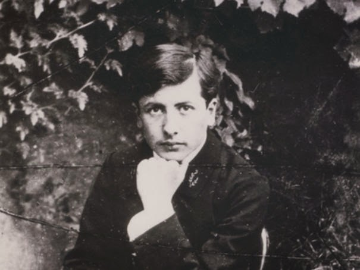
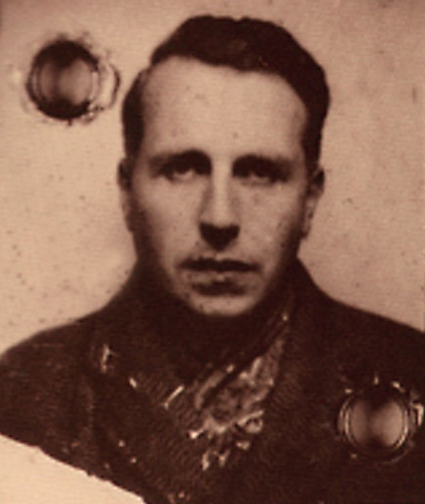
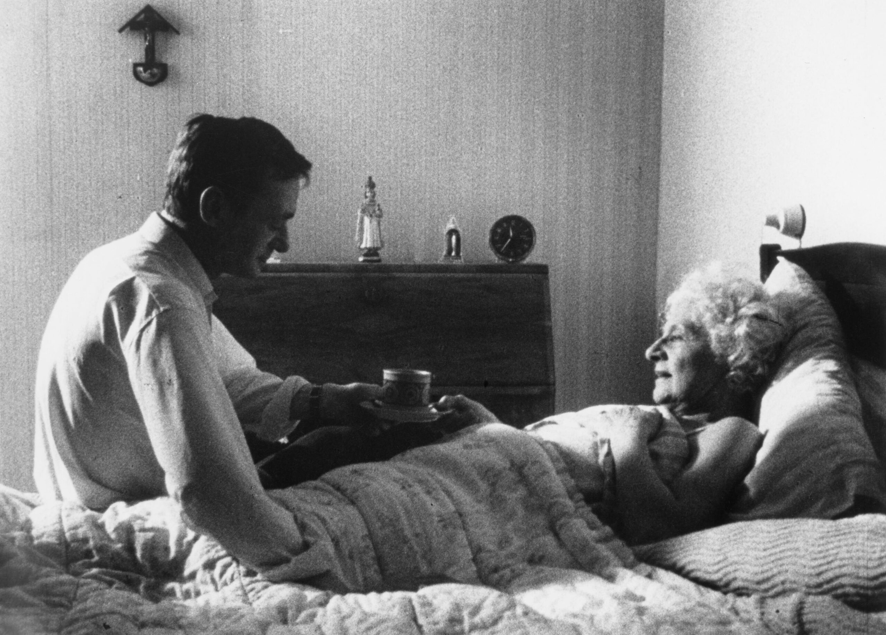

Ben's notes
LAST UPDATE: JANUARY 2025
January 2026
Le commis (1908), Robert Walser. Traduction de Bernard Lortholary.

Interview with Roberto Bolaño, 2003(?). Link here.
Edvard Munch (1974), Peter Watkins. Drypoint: The Kiss (1895).

End of 2025
The second half of the year has been particularly barren—I had to relocate too many times and to complete my doctorate. Only during its last weeks, the last few weeks of December, could I, again, read a little bit.
Les émigrants (1992), W. G. Sebald. Traductions de Patrick Charbonneau.

Seiobo est descendue sur terre (2008), László Krasznahorkai. Traduction de Joëlle Dufeuilly.

Livre de préfaces et Essai d'autobiographie, Jorge Luis Borges. Traductions de Françoise Rosset et Michel Seymour Tripier.
Interview with Clarice Lispector, São Paulo, 1977. Link here.

László Krasznahorkai: I Didn't Want to Be a Writer, Louisiana Museum of Modern Art, 2020. Link here.

Summer 2025
Sátántangó (1985), László Krasznahorkai. Traduction de Joëlle Dufeuilly.
La venue d'Isaïe (1999), László Krasznahorkai. Traduction de Joëlle Dufeuilly.
Mal vu mal dit (1981), Samuel Beckett.
Voices through time (1996), Franco Piavoli.
Killer of Sheep (1978), Charles Burnett.
Catwalk (1974), Abbott Meader.
Trilogy: The Weeping Meadow (2004), Theo Angelopoulos.
Kafka : pour une littérature mineure (1975), Gilles Deleuze et Félix Guattari.
De l'inconvénient d'être né, Emil Cioran (1973).

Rien de plus abominable que le critique et, à plus forte raison, le philosophe en chacun de nous : si j'étais poète, je réagirais comme Dylan Thomas, qui, lorsqu'on commentait ses poèmes en sa présence, se laissait tomber par terre et se livrait à des contorsions.
Leaves of Grass (1856-1891), Walt Whitman.
Whoever degrades another degrades me... and whatever is done or said returns to me,
And whatever I do or say I also return.
Águe Viva (1973), Clarice Lispector. Traduction de Claudia Poncioni et Didier Lamaison.
Je suis fatiguée. Ma fatigue tient beaucoup à ce que je suis une personne extrêmement occupée : je prends soin du monde. Tous les jours je regarde depuis mon balcon vers le bout de plage et de mer et je vois les écumes épaisses et blanchies et je vois que pendant la nuit les eaux on avancé, inquiètes. Je le vois grâce aux traces que la marée a laissées sur le sable. Je regarde les badamiers de la rue où j'habite. Avant de me coucher je prends soin du monde et je vois si le ciel de la nuit est étoilé et bleu marine parce que certaines nuits le ciel n'est pas noir mais semble être fait d'un bleu marine intense, une couleur que j'ai déjà employée pour des vitraux. J'aime les intensités. Je prends soin du petit garçon âgé de neuf ans vêtu de haillons et qui a la peau sur les os. Aura-t-il la tuberculose, à moins qu'il ne l'ait déjà. Alors au Jardin botanique je me retrouve exténuée. Dans mon seul regard je dois prendre soin de milliers de plantes et d'arbres et surtout de la fleur de nénuphar géant. Elle est là. Et je la regarde.
Borges en dialogues (1984), Jorge Luis Borges et Osvaldo Ferrari. Traduit par René Pons.
Thomas l'obscur (1950), Maurice Blanchot.
L'heure du diable, Fernando Pessoa. Traduction de Maria Druais et Bernard Sesé.
Les aspirations vagues, les désirs futiles, les dégoûts des choses ordinaires, même lorsque nous les aimons, l'ennui de ce qui n'ennuie pas — tout cela est mon oeuvre, née lorsque, allongé sur la berge des longs fleuves de l'abîme, je pense que je ne sais rien moi non plus. Alors ma pensée descend, effluve vague, dans les âmes des hommes et ils se sentent différents d'eux-même.
April 2025
Murphy (1938), Samuel Beckett.
Trois sentiers vers le lac, Ingeborg Bachmann. Collection de nouvelles publiées par Actes Sud en 2006, traduites par Hélène Belletto.
Fragments du livre de l'intranquilité de Bernardo Soares (1982), Fernando Pessoa, lu par Denis Lavant, suivi de Fernando Pessoa — Une Vie, une Œuvre.
Extraits du Terrier de Franz Kafka (1923). Re-"lecture" pour moi, interprété ici par Denis Lavant. Ci-dessous : pointe sèche de Miodrag Đurić (1983).

c
Le grand Meaulnes (1913), Alain-Fournier.
L'Envie de dormir (1888), Anton Tchekov.
Lettres à Felice de Franz Kafka (1912-1913), traduites par Marthe Robert et lues par Jean Négroni.
Eternity and a Day (1998), Theo Angelopoulos.
Guerre & Guerre (1999), László Krasznahorkai. Traduction de Joëlle Dufeuilly. Peinture : The Fall of the Reben Angels (1592), Pieter Bruegel.
Grorges Bataille : Madame Edwarda, L'Archangélique, L'abbé C., Le bleu du ciel.

À cette heure de la nuit, la rue était déserte. Tout à coup, mauvaise et sans dire un mot, Edwarda courut seule. La porte Saint-Denis était devant elle : elle s’arrêta. Je n’avais pas bougé : immobile comme moi, Edwarda attendait sous la porte, au milieu de l’arche. Elle était noire, entièrement, simple, angoissante comme un trou : je compris qu’elle ne riait pas et même, exactement, que, sous le vêtement qui le voilait, elle était maintenant absente. Je sus alors – toute ivresse en moi dissipée – qu’Elle n’avait pas menti, qu’elle était dieu. Sa présence avait la simplicité inintelligible d’une pierre : en pleine ville, j’avais le sentiment d’être la nuit dans la montagne, au milieu de solitudes sans vie.
— Madame Edwarda, écrit en 1941.
De l'inconvénient d'être né, Emil Cioran (1973).
Du temps que je partais en vélo pour des mois à travers la France, mon plus grand plaisir était de m'arrêter dans des cimetières de campagne, de m'allonger entre deux tombes, et de fumer ainsi des heures durant.
J'y pense comme à la période la plus active de ma vie.
Le vrai contact entre les êtres ne s'établit que par la présence muette, par l'apparente non-communication, par l'échange mystérieux et sans paroles qui ressemble à la prière intérieure.
La promenade (1917), Robert Walser. Traduction de Bernard Lortholary. Ainsi que Robert Walser : Une Vie, une Œuvre, France Culture (2002).
Jorge Luis Borges' Norton Lectures (1967-1968) and interview by F. Buckley Jr. (1977).
La chouette aveugle (1953), Sadegh Hedayat.
Touki Bouki (1973), Djibril Diop Mambéty.
March 2025
Solénoïde, Mircea Cărtărescu (2015), tr. de Laure Hinckel.
Mes parents m'attendaient à la maison, et là se trouvait toute ma vie.
Je les laissais devant le téléviseur et j'allais dans la chambre qui donnait sur le boulevard Ștefan cel Mare.
Je me pelotonnais sur mon lit et je désirais si intensément mourir que je sentais quelques unes de mes vertèbres finir par y consentir.
Mon lit devenait alors un site archéologique dans lequel, jaunes et poreux, placés dans une position impossible de créature écrasée, gisaient les os d'un animal éteint.
Cold War (2018), Paweł Pawlikowski.
The Terence Davies Trilogy (1983).
February 2025
A Wolf Lying in Wait, Abbas Kiarostami. Translated by Karim Emami and Michael Beard.

J'aime le laid d'un amour d'égal à égal.
Et je défie la mort.
Je - Je suis ma propre mort.
Et personne ne va plus loin.
Ce qu'il y a de barbare en moi cherche le barbare cruel hors de moi.
Je vois en clairs et obscures les visages des personnes qui vacillent aux flammes du bûcher.
Je suis un arbre qui brûle avec un dur plaisir.
Seule une douceur me possède : la connivence avec le monde.
J'aime ma croix, celle que douloureusement je porte.
C'est le minimum que je peux faire de ma vie : accepter avec commisération le sacrifice de la nuit.
— Água Viva, Clarice Lispector (1973), tr. de Claudia Poncini et Didier Lamaison.
La liberté que parfois elle ressentait ne venait pas de réflexions nettes, mais d'un état fait de perceptions par trop organiques pour être formulées en pensée.
Parfois, au fond de la sensation tremblotait une idée qui lui donnait une légère conscience de son espèce et de sa couleur.
— Près du coeur sauvage, Clarice Lispector (1944), tr. de Claudia Poncini et Didier Lamaison.
N'entre pas serein dans cette nuit sans aurores,
Les vieux devraient hurler quand le jour tombe
Ah, rage, enrage contre la mort des soleils !
Les hommes sages oublient souvent
De tonner et s'enfoncent dans l'ombre qu'ils savaient méritée,
Mais ils n'entrent pas sereins dans cette nuit sans aurores.
Les bons, la dernière vague, les avaugles
Se souvenant des actes de leurs vertes années dans le golfe sombre
Ah, ragent, enragent contre la mort des soleils.
Les hommes sauvages qui saisirent le soleil en plein vol
Et sentirent trop tard qu'il versait dans la pénombre
N'entrent pas sereins dans cette nuis sans aurores.
Les hommes graves, qui voient que les yeux aveugles sont indolores,
Et même, qu'ils brillent, gais météores
Ah, ragent, enragent contre la mort des soleils.
Et toi, mon père, de ton triste balcon,
Maudits-moi, je t'en prie, bénis-moi de tes larmes endeuillées
Mais n'entre pas serein dans cette nuit sans aurores,
Et rage, enrage contre la mort des soleils !
— Do not go gentle into that good night, Dylan Thomas (1947), réécri par Mircea Cărtărescu dans Solénoïde (2015), tr. française de Laure Hinckel.
The original reads as follows:
Do not go gentle into that good night,
Old age should burn and rave at close of day;
Rage, rage against the dying of the light.
Though wise men at their end know dark is right,
Because their words had forked no lightning they
Do not go gentle into that good night.
Good men, the last wave by, crying how bright
Their frail deeds might have danced in a green bay,
Rage, rage against the dying of the light.
Wild men who caught and sang the sun in flight,
And learn, too late, they grieved it on its way,
Do not go gentle into that good night.
Grave men, near death, who see with blinding sight
Blind eyes could blaze like meteors and be gay,
Rage, rage against the dying of the light.
And you, my father, there on the sad height,
Curse, bless, me now with your fierce tears, I pray.
Do not go gentle into that good night.
Rage, rage against the dying of the light.
L'Abécédaire de Gilles Deleuze (1988-1989), avec Gilles Deleuze et Claire Parnet. Link here.

Chronicle of a Summer (1961), Jean Rouch and Edgar Morin.

January 2025
From What Is Before (1972), Lav Diaz.


Un champion de jeûne (1922), Franz Kafka. Relecture.

Lettres à un jeune poète, Rainer Maria Rilke et Franz Kappus (1903 - 1908). Lu par Éric Caravaca et Grégoire Leprince Ringuet (2020), traduction de Sacha Zilberfarb.


Gilles Deleuze, Qu'est-ce que l'acte de création (1987). Ensuite, Deleuze et la littérature (2016) : Kafka, pour une littérature mineure et Beckett, l’épuisé.

December 2024
Austerlitz (2001), W. G. Sebald.

Procès de Jeanne d'Arc (1962), Robert Bresson.

Goodbye, Dragon Inn (2003), Tsai Ming-liang.

I Am Not a Wich (2017), Rungano Nyoni.

La vie de bohème (1992), Aki Kaurismäki

Diary of an African Nun (1977), Julie Dash.

Nocturne du Chili (2000) et Dernier crépuscule sur la terre (2008), Roberto Bolaño. Traduction de Robert Amutio.

Nicanor Parra – l'anti-poète, étoile de Roberto Bolaño, avec Philippe Lançon, Felipe Tupper et Florence Olivier (link here).

Antes de despedirme
Tengo derecho a un último deseo:
Generoso lector
Quema este libro
No representa lo que quise decir
A pesar de que fue escrito con sangre
No representa lo que quise decir.
Mi situación no puede ser más triste
Fui derrotado por mi propia sombra:
Las palabras se vengaron de mí.
Perdóname lector
Amistoso lector
Que no me pueda despedir de ti
Con un abrazo fiel:
Me despido de ti
con una triste sonrisa forzada.
Puede que yo no sea más que eso
Pero oye mi última palabra:
Me retracto de todo lo dicho.
Con la mayor amargura del mundo
Me retracto de todo lo que he dicho.
— Me retracto de todo lo dicho, Nicanor Parra.
Avant de partir
J'ai le droit à un dernier souhait :
Lecteur généreux
Brûle ce livre
Il ne représente pas ce que j'ai voulu dire
En dépit du fait qu'il a été écrit avec du sang
Il ne représente pas ce que j'ai voulu dire.
Ma situation ne peut pas être plus triste
J'ai été défait par ma propre ombre :
Les mots se sont vengés de moi.
Pardonne-moi lecteur
Lecteur amical
Que je ne puisse pas te dire aurevoir
Avec une étreinte fidèle :
Je te dis aurevoir
avec un sourire triste et forcé.
Il se peut que je ne sois rien de plus que ça
Mais écoute mes derniers mots :
Je retire tout ce que j'ai dit.
Avec la plus grande amertume du monde
Je retire tout ce que j'ai dit.
— Je retire tout ce que j'ai dit, Nicanor Parra.
Zéro de conduite (1933), Jean Vigo.

Un hombre que cultiva un jardín, como quería Voltaire.
El que agradece que en la tierra haya música.
El que descubre con placer una etimología.
Dos empleados que en un café del Sur juegan un silencioso ajedrez.
El ceramista que premedita un color y una forma.
Un tipógrafo que compone bien esta página, que tal vez no le agrada
Una mujer y un hombre que leen los tercetos finales de cierto canto.
El que acaricia a un animal dormido.
El que justifica o quiere justificar un mal que le han hecho.
El que agradece que en la tierra haya Stevenson.
El que prefiere que los otros tengan razón.
Esas personas, que se ignoran, están salvando el mundo.
— Los Justos, JLB.
Un homme qui cultive son jardin, comme le voulait Voltaire.
Celui qui est reconnaissant que sur la terre il y ait de la musique.
Celui qui découvre avec plaisir une étymologie.
Deux employés qui dans un café du Sud jouent un silencieux jeu d’échecs.
Le céramiste qui prémédite une couleur et une forme.
Un typographe qui compose bien cette page, qui peut-être ne lui plaît pas.
Une femme et un homme qui lisent les tercets finaux d’un certain chant.
Celui qui caresse un animal endormi.
Celui qui justifie ou veut justifier un mal qu’on lui a fait.
Celui qui est reconnaissant que sur terre il y ait un Stevenson.
Celui qui préfère que les autres aient raison.
Ces personnes, qui s’ignorent, sont en train de sauver le monde.
— Les justes, JLB.
Emil Cioran, ou les nuits suspendues, emission diffusée en 2005 sur France Culture, par Sylvia Ben Ytzhak et Christine Berlamont (link here).

November 2024
Berlin Alexanderplatz (1980), Rainer Werner Fassbinder.

"What Remains?", interview of Hannah Arendt with Günter Gaus (link here).

J'ai tué (collection), 1922-1926, Mikhaïl Boulgakov. Translated to French by Jean-Louis Chavarot and Françoise Flamant.

Self-Portrait as a Coffee-Pot (2024), William Kentridge.

October 2024
La maladie de la mort (1982), Marguerite Duras.

L'innommable (1953), Samuel Beckett.

Une vie, une œuvre: Samuel Beckett (2006); Moïse (2015).
The Winter of Our Discontent (1961), John Steinbeck. Painting by Edward Hopper.

Justine, ou les malheurs de la vertu (1791), Donatien Alphonse François, Marquis de Sade.

September 2024
The Nose (1836) and The Overcoat (1842), Nikolai Gogol. Transkated to French by Henri Mongault. Illustration by Yuri Nornstein and Francheska Yarbusova.

To the Left of the Father (2001), Luiz Fernando Carvalho.


La femme qui a tué les poissons et autres contes (1968), Clarice Lispector. Traductions de Jacques Thiériot, Teresa Thiériot, et Izabella Borges.

Appels téléphoniques (collection), 1997, Roberto Bolaño. Traduction de Robert Amutio.

Wings of Desire (1987), Wim Wenders. Rewatch.

Happy as Lazzaro (2018), Alice Rohrwacher.

Artifices (1944), Jorge Luis Borges. Traduction de Roger Caillois, Nestor Ibarra et Paul Verdevoye, revue par Jean Pierre Bernès.
August 2024
Amuleto (1999), Roberto Bolaño. Traduction de Robert Amutio.

Le jardin aux sentiers qui bifurquent (recueil, 1956), Jorge Luis Borges. Traduction de Roger Caillois, Nestor Ibarra et Paul Verdevoye, revue par Jean Pierre Bernès.

Kafka, un rapport douloureux à l'existence et la difficulté d'être soi à travers l'œuvre de Kafka. Entretients diffusés par France Culture pour la première fois en 1983.
21 July 2024
Près du coeur sauvage (1944), Clarice Lispector. Traduction de Claudia Poncioni et Didier Lamaison.

The night of counting the years (1969), Shadi Abdel Salam.


20 July 2024
Georges Bataille. La littérature et le mal (INA, 1958); Entretien (Qui êtes-vous ?) avec André Gillois (1951); Une Vie, une œuvre par Roland Auguet et Christiane Mallarmé sur France Culture (1985).

Repast (1951), Mikio Naruse.

6 July 2024
La Métamorphose, lu par Micha Lescot en décembre 2022 (link here). Dessin de Franz Kafka.

29 June 2024
The Cranes Are Flying (1957), Mikhail Kalatozov.

27 June 2024
The Passion of Joan of Arc (1928), Carl Theodor Dreyer.

23 June 2024
Sambizanga (1972), Sarah Maldoror.

15 June 2024
La plus scrète mémoire des hommes (2021), Mohamed Mbougar Sarr.
20 May 2024
Histoires de Gabriel Medrano (1945), Julio Cortázar. Translated to French by Françoise Rosset.

19 May 2024
The Savage Detectives (1998), Roberto Bolaño. Translated to French by Robert Amutio.

18 May 2024
Anatomy of a fall (2023), Justine Triet.

11 May 2024
Jorge Luis Borges : Une Vie, une Œuvre, France Culture (1985). With Christian Bourgois, Pierre Bourgeade, François Marie Banier, Hector Bianciotti et Jacques Taroni. Link here.
9 May 2024
Damnation (1987), Béla Tarr.

5 May 2024
Umberto D. (1952), Vittorio De Sica.

27 April 2024
The Music Room (1968), Satyajit Ray.

22 April 2024
I Was Born, But... (1932), Yasujirō Ozu.

14 April 2024
Perfect Days (2023), Wim Wenders.

31 March 2024
The Garden of Forking Paths (1941), Jorge Luis Borges. Translated to French by Paul Verdevoye.
Extraits de La nausée (1938), Jean-Paul Sartre. Lecture par Daniel Mesguich. Link here.
30 March 2024
More Borges. Today, I read The Circular Ruins (1940) and The Library of Babel (1944).
29 March 2024
L'immortel et L'Aleph (1944-1952), Jorge Luis Borges. Relecture.

13 March 2024
Hedgehog in the Fog (1975), Yuri Nornstein and Francheska Yarbusova. Rewatch. Link here.


10 March 2024
Límites (1961), Jorge Luis Borges.
Il est un vers de Verlaine dont je ne me souviendrai plus,
Il est une rue toute proche déjà interdite à mes pas.
Il est un miroir qui m'a reflété pour la dernière fois.
Il est une porte que j'ai refermée jusqu'à la fin du monde.
Parmi les livres de ma bibliothèque, que je vois en ce moment,
Il en est que je n'ouvrirai plus jamais.
Cet été, j'aurai cinquante ans;
La mort me dégrade, incessamment.
Hay una línea de Verlaine que no volveré a recordar.
Hay una calle próxima que está vedada a mis pasos,
hay un espejo que me ha visto por última vez,
hay una puerta que he cerrado hasta el fin del mundo.
Entre los libros de mi biblioteca (estoy viéndolos)
hay alguno que ya nunca abriré.
Este verano cumpliré cincuenta años;
La muerte me desgasta, incesante.
03 March 2024
Floating Clouds (1955), Mikio Naruse.

25 February 2024
When a Woman Ascends the Stairs (1960), Mikio Naruse.

More Borges: Radioscopie de France Inter (1981). Link here.

18 February 2024
Letter Never Sent (1959), Mikhail Kalatozov.

12 February 2024
Jorge Luis Borges : Une vie, une œuvre (2007), Lydia Ben Ytzhak. Link here.

11 February 2024
Jorge Luis Borges, Entretiens France Culture (1965). Link here.

Drifting Clouds (1996), Aki Kaurismäki.

9 February 2024
Orlando (1928), Virginia Woolf.

Early February 2024
Beau travail (1999), Claire Denis. Rewatch.

23 January 2024
The Book of Sand (collection), 1978, Jorge Luis Borges. Translation to French by Françoise Rosset and Jean-Pierre Bernès.

21 January 2024
Museo Nacional de Antropología, México.

10 January 2024
Paris, Texas (1984), Wim Wenders. Rewatch.

7 January 2024
La haine (1995), Mathieu Kassowitz. Rewatch.

31 December 2023
The Spirit of the Beehive (1973), Víctor Erice.


16 December 2023
Pirosmani (1969), Giorgi Shengelaia.


9 December 2023
First Graders (1984), Abbas Kiarostami.

3 December 2023
A Man Escaped (1956), Robert Bresson.

26 November 2023
Daughters of two worlds (1991), Serap Berrakkarasu.

19 November 2023
Taipei Story (1985), Edward Yang.

4 November 2023
Vive l'amour (1994), Ming-liang Tsai.

24 October 2023
The invisible life of Eurídice Gusmão (2019), Karim Aïnouz.

15 October 2023
Jakob Von Gunten (1909), Robert Walser. Translated to French by Marthe Robert.

Clothelines (1981), Roberta Cantow.
4 October 2023
Poupées des ténèbres (2016), Allen S. Weiss. La projection du film au Cinéma CityClub Pully a été suivie d'un tour de table avec Michel Nedjar.

2 October 2023
Tokyo Twilight (1957), Yasujirō Ozu.

30 September 2023
Why This World: A Biography of Clarice Lispector (2009), Benjamin Moser.

23 September 2023
Les glaneurs et la glaneuse (2000), Agnès Varda.

10 September 2023
Fragment of a letter, sent from Clarice Lispector to Olga Borelli, September 29, 1975. Translated to French by Didier Lamaison.
On ne peut faire correctement que ce qu’on aime vraiment. Mes livres ne parlent pas beaucoup de faits proprement dits, parce que, pour moi, l’important ce ne sont pas les faits en eux-mêmes, mais leurs répercussions sur l’individu. C’est cela qui compte réellement. C’est ce que je fais. Et je crois que, de ce point de vue, moi aussi je fais des livres engagés sur l’homme et la réalité, parce que la réalité n’est pas un phénomène simplement extérieur.
A gente só pode fazer bem as coisas que ama realmente. Os meus livros não se preocupam muito com os fatos em si porque, para mim, o importante não são os fatos em si, mas as repercussões dos fatos nos indivíduos. Isso é que realmente importa. É o que eu faço. E penso que, sob este aspecto, eu também faço livros comprometidos com o homem e a sua realidade, porque a realidade não é um fenômeno puramente externo.
9 September 2023
The Hour of the Star (1977), Clarice Lispector. Translated to French by Marguerite Wünscher.

8 September 2023
Mandabi (1968), Ousamane Sembène.

7 September 2023
Tortilla Flat (1935), John Steinbeck. Painting: Schumann House (1931), Edward Hopper.

2 September 2023
Stalker (1979), Andrei Tarkovsky. Rewatch.


21 August 2023
My Way Home (1978), Bill Douglas.

20 August 2023
The Burrow (1931) and The Village Schoolmaster (1931), Franz Kafka. Translated to French by Alexandre Vialatte. Painting by Michel Nedjar.

12 August 2023
I'm Going to Santiago (1964), Sara Gómez.

10 August 2023
One Way or Another (1977), Sara Gómez. Extract here.

A Hunger Artist (collection), 1922, Franz Kafka. Translated to French by Alexandre Vialatte.

6 August 2023
The Scent of Green Papaya (1993), Tran Anh Hung.

5 August 2023
Michel Nedjar exposé à la Collection de l'Art Brut, Lausanne.

26 July 2023
L'étranger (1942), Albert Camus. Relecture.

23 July 2023
Flowers of Shanghai (1998), Hou Hsiao-hsien.

19 July 2023
Summer in Germany. Time to rewatch Alice in the Cities (1974), Wim Wenders.

16 July 2023
L'exil et le royaume (1957), Albert Camus. Painting: Morning Sun (1952), Edward Hopper.

14 July 2023
Gena Rowlands and Peter Falk discuss A Woman Under the Influence (2004). Link here.

8 July 2023
The Red Pony (1933), John Steinbeck. Photograph by Dorothea Lange, 1953.

6 July 2023
Scenes from A Marriage (1973), Ingmar Bergman.


2 July 2023
Shosha (1978), Isaac Bashevis Singer. Translated from English (I know) to French by Marie-Pierre Castelnau-Bay and Jacqueline Chnéour. Photograph: Krochmalna street in 1934.

24 June 2023
In the Penal Colony (1919), Franz Kafka. Translated to French by Alexandre Vialatte. Photograph: Franz Kafka (right) with Otto Brod, 1909.

16 June 2023
Summer with Monika (1953), Ingmar Bergman.

4 June 2023
The Heart of a Dog (1925), Mikhail Bulgakov. Translated to English by Michael Glenny. Photograph by Josef Koudelka (1987).

3 June 2023
The Passion According to G.H. (1964), Clarice Lispector. Translated to French by Paulina Roitman et Didier Lamaison.

2 June 2023
Early Summer (1951), Yasujirō Ozu.

1 June 2023
And Life Goes On... (1992), Abbas Kiarostami.

25 May 2023
Shame (1968), Ingmar Bergman.


5 May 2023
My Childhood (1972), Bill Douglas.


1 May 2023
My Ain Folk (1973), Bill Douglas.

Saute ma ville (1968), Chantal Akerman.

30 April 2023
Un homme qui dort (1967), Georges Perec.

29 April 2023
Interview with Clarice Lispector (1977), São Paulo. Link here.

23 April 2023
Água Viva (1973), Clarice Lispector. Translated to French by Claudia Poncioni and Didier Lamaison.

Woman in the Dunes (1964), Hiroshi Teshigahara.

22 April 2023
The Master and Margarita (1966), Mikhail Bulgakov. Translated to French by Françoise Flamant.

Wild Strawberries (1957), Ingmar Bergman.

8 April 2023
This Is Not a Burial, It's a Resurrection (2019), Lemohang Jeremiah Mosese.


7 April 2023
The Face of Another (1966), Hiroshi Teshigahara.

6 April 2023
A Man Who Sleeps (1974), Bernard Queysanne.

2 April 2023
This morning, I rewatched La jetée (1962), Chris Marker.


25 March 2023
Jože Plečnik's house, Ljubjana, Slovenia.

18 March 2023
Werckmeister Harmonies (2000), Béla Tarr.


11 March 2023
Hour of the Wolf (1968), Ingmar Bergman. Link here.


6 March 2023
Claude Burgelin and Denis Cosnard on Georges Perec. Link here.
Être juif, pour Perec ? « Ce serait plutôt une absence, une question, une mise en question, un flottement, une inquiétude. »

4 March 2023
The Time to Live and the Time to Die (1985), Hou Hsiao-hsien. Link here.

19 February 2023
Faces (1968), John Cassavetes. Link here.


12 February 2023
Floating Weeds (1959), Yasujirō Ozu.

5 February 2023
Black Girl (1966), Ousmane Sembène.

La Strada (1954), Federico Fellini.

4 February 2023
Serre moi fort (2021), Mathieu Amalric.

30 January 2023
Il n'y a pas de Ajar (2022), Delphine Horvilleur.

29 January 2023
Muriel ou le temps d'un retour (1963), Alain Resnais.

28 January 2023
Marthe Robert - À propos du “Procès” de Franz Kafka (1955). Link here.

21 January 2023
Close-Up (1990), Abbas Kiarostami. Link here.


20 January 2023
The Castle (1926), Franz Kafka. Translated to French by Bernard Lortholary.

18 January 2023
L'enfance nue (1968), Maurice Pialat.

15 January 2023
Mouchette (1967), Robert Bresson.

14 January 2023
Today was a Delphine Horvilleur day. I listened to her discussing Identity and Literature, Grief, and "Pudeur" and Feminity in Judaism. Painting by Paul Klee: Mountain and Synthetic air (1930).

Wanda (1970), Barbara Loden.

6 January 2023
Mass IIII (2011), Amenra. Link here.

3 January 2023
The House Is Black (1963), Forugh Farrokhzad. Link here.

2 January 2023
Fanny and Alexander (1982), Ingmar Bergman. Link here.

30 December 2022
Yi Yi (2000), Edward Yang. Link here.

18 December 2022
Le bonheur (1965), Agnès Varda.

11 December 2022
The Seventh Seal (1957), Ingmar Bergman.

10 December 2022
Viridiana (1961), Luis Buñuel. Link here.


A Virgin Spring (1960), Ingmar Bergman.


4 December 2022
A Brighter Summer Day (1991), Edward Yang.

Short documentary on Yuri Nornstein (2004). Link here.

2 December 2022
Beau travail (1999), Claire Denis.


28 November 2022
Tree of Wooden Clogs (1978), Ermanno Olmi.

20 November 2022
Bartleby, the Scrivener (1853), Herman Melville. Painting by Pablo Picasso: Breakfast of a Blind Man (1903).

Europe '51 (1952), Roberto Rossellini.

19 November 2022
Apur Sansar (1959), Satyajit Ray. Link here.

13 November 2022
Aparajito (1956), Satyajit Ray. Link here.

11 November 2022
Pather Panchali (1955), Satyajit Ray. Link here.

6 November 2022
Jeanne Dielman, 23, quai du Commerce, 1080 Bruxelles (1975), Chantal Akerman.

5 November 2022
Far From Vietnam (1967), Joris Ivens, William Klein, Claude Lelouch, Agnès Varda, Jean-Luc Godard, Chris Marker and Alain Resnais.

Josef Koudelka exibition at Photo Elysée museum, Lausanne (2022).


23 Octobre 2022
Ulysse (1983), Agnès Varda.

22 Octobre 2022
Youtube proposed me to rewatch Dominique Mercy's solo in Vollomond, by Pina Bausch. Link here.

It reminded me of Olivier de Sagazan, and I could not but watch a couple of his interviews and performances – for the tenth time, propably.

In turn, I naturally went back to the work of Michel Nedjar (I always go back to the work of Michel Nedjar).

Les statues meurent aussi (1953), Chris Marker.

Les hommes de la baleine (1956), Mario Ruspoli.

20 Octobre 2022
L'Eclisse (1962), Michelangelo Antonioni.

16 Octobre 2022
Description d'un combat (1960), Chris Marker.


Rosa Rosae. A Spanish Civil War Elegy (2021), Carlos Saura.
14 Octobre 2022
Journal d'un curé de campagne (1951), Robert Bresson.


8 Octobre 2022
Le feu follet (1963), Louis Malle.

3 Octobre 2022
Au revoir les enfants (1987), Louis Malle.

2 Octobre 2022
Daguerréotypes (1975), Agnès Varda.


The Adventures of Prince Achmed (1926), Lotte Reiniger. Link here.

Un chien Andalou (1929), Luis Buñuel.

1 October 2022
Bergman Island (2021), Mia Hansen-Løve.

The Amorous Indies (2018), Clément Cogitore.

26 September 2022
L'Histoire de l'oeil (1928), Georges Bataille.

24 September 2022
2666 (2004), Roberto Bolaño. Translated to French by Robert Amutio. Painting by Carlos Mérida: Fiesta de pájaros (1959).
15 September 2022
Man With a Movie Camera (1929), Dziga Vertov.


9 September 2022
The Exterminating Angel (1962), Luis Buñuel.

30 August 2022
Oslo, August 31st (2011), Joachim Trier.

29 August 2022
Reprise (2006), Joachim Trier.
28 August 2022
My Dinner With André (1981), Louis Malle.

21 August 2022
News from Home (1977), Chantal Akerman. Link here.

I rewatched two of Yuri Nornstein's animated films: Tale of Tales (1979). Link here.

And Hedgehog in the Fog (1975). Link here.

Discussion between Mohamed Mbougar Sarr, Pierre Ducrozet et Jakuta Alikavazovic around Los detectives salvajes (1998) from Roberto Bolaño, on France Culture.

20 August 2022
Cycling the Frame (1988), Cynthia Beatt and Tilda Swinton.

19 August 2022
Visages d'enfants (1925), Jacques Feyder.

16 August 2022
Cries and Whispers (1972), Ingmar Bergman.

15 August 2022
2666, from Roberto Bolaño (2004):
"Il choisissait La Métamorphose plutôt que Le Procès, il choisissait Bartleby plutôt que Moby Dick, Un cœur simple plutôt que Bouvard et Pécuchet et Un conte de Noël plutôt que Conte de deux villes ou Les papiers posthumes du Pickwick Club. Même les pharmaciens cultivés ne se risquent plus aux grandes œuvres, imparfaites, torrentielles, celles qui ouvrent des chemins dans l'inconnu. Ils choisissent les exercices parfaits des grands maîtres. Ou ce qui revient au même : ils veulent voir les grands maîtres dans des séances d'escrime d'entraînement, mais ne veulent rien savoir des vrais combats, où les grands maîtres luttent contre ça, ce ça qui nous terrifie tous, ce ça qui effraie et charge cornes baissées, et il y a du sang et des blessures mortelles et de la puanteur."
"He chose The Metamorphosis over The Trial, he chose Bartleby over Moby-Dick, he chose A Simple Heart over Bouvard and Pecuchet, and A Christmas Carol over A Tale of Two Cities or The Pickwick Papers. What a sad paradox, thought Amalfitano. Now even bookish pharmacists are afraid to take on the great, imperfect, torrential works, books that blaze paths into the unknown. They choose the perfect exercises of the great masters. Or what amounts to the same thing: they want to watch the great masters spar, but they have no interest in real combat, when the great masters struggle against that something, that something that terrifies us all, that something that cows us and spurs us on, amid blood and mortal wounds and stench."
"Escogía La metamorfosis en lugar de El proceso, escogía Bartleby en lugar de Moby Dick, escogía Un corazón simple en lugar de Bouvard y Pécuchet, y Un cuento de navidad en lugar de Historia de dos ciudades o de El Club Pickwick. Qué triste paradoja, pensó Amalfitano. Ya ni los farmacéuticos ilustrados se atreven con las grandes obras, imperfectas, torrenciales, las que abren camino en lo desconocido. Escogen los ejercicios perfectos de los grandes maestros. O lo que es lo mismo: quieren ver a los grandes maestros en sesiones de esgrima de entrenamiento, pero no quieren saber nada de los combates de verdad, en donde los grandes maestros luchan contra aquello, ese aquello que nos atemoriza a todos, ese aquello que acoquina y encacha, y hay sangre y heridas mortales y fetidez."
14 August 2022
The Color of Pomegranates (1969), Sergei Parajanov.